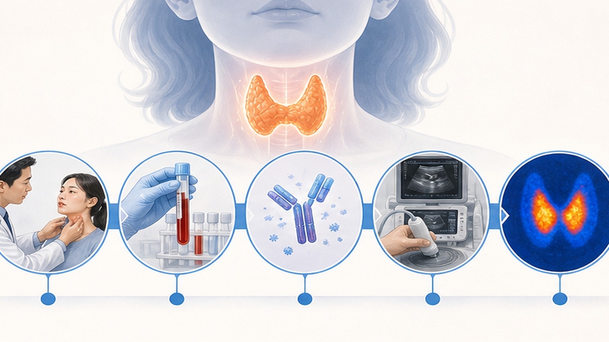
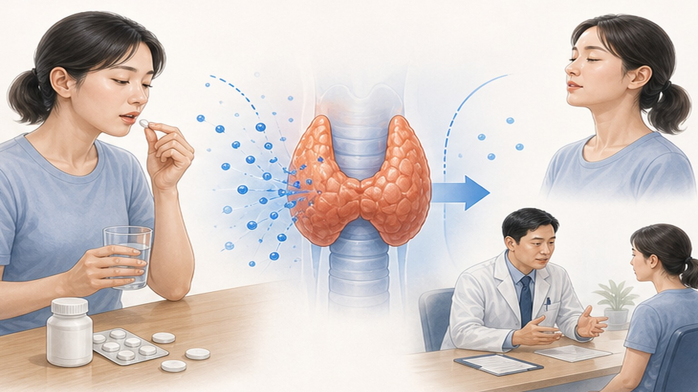
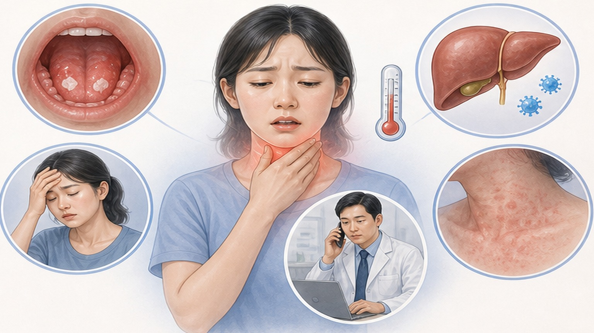
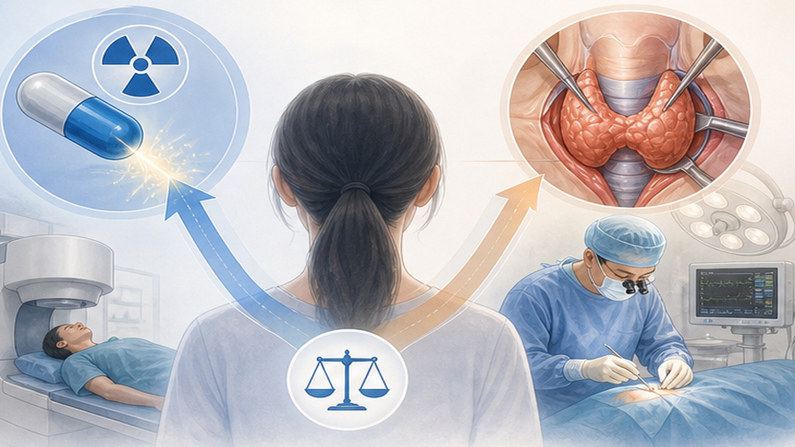

PATIENT EDUCATION · ENDOCRINOLOGY
갑상선기능항진증,
정확한 진단과 단계적 치료로 안전하게
갑상선기능항진증 (Hyperthyroidism) — 호르몬 과다로 대사가 빨라지는 상태, 항갑상선제(ATD)·방사성요오드(RAI)·수술까지 단계별 선택을 함께 결정합니다
02
CHAPTER 01 · OVERVIEW
갑상선기능항진증 (Hyperthyroidism) 이란
갑상선 호르몬이 과도하게 분비되어 몸의 대사가 빨라지는 상태입니다
0.34%
한국 성인
현성 유병률
현성 유병률
2.5×
여성이 남성
대비 발생률
대비 발생률
3.1×
심방세동(AF)
발생 위험 증가
발생 위험 증가
주요 원인 — 전체의 약 70~80%는 자가면역질환인 그레이브스병(Graves' disease)이며, 그 외 독성 결절(Toxic Nodule), 갑상선염(Thyroiditis) 등이 있습니다. 치료하지 않으면 심방세동·심부전·골다공증·근육 위축 등 전신 합병증을 유발할 수 있어 정확한 감별 진단과 단계적 치료가 중요합니다.
03
CHAPTER 02 · SYMPTOMS
주요 증상 (Symptoms)
갑상선 호르몬이 과다하면 몸 전체의 대사가 빨라져 다양한 증상이 나타납니다
SYMPTOM · 01
더위 못 견딤 · 다한 (Heat Intolerance)
평소보다 땀이 많고 더위를 더 못 견딥니다. 피부가 따뜻하고 습하며, 손발이 끈적거리는 느낌도 흔합니다.
SYMPTOM · 02
두근거림 · 빈맥 (Palpitation)
안정 시에도 분당 100회 이상 심박수가 빠르고, 가슴 두근거림 · 부정맥 · 호흡곤란이 동반될 수 있습니다.
SYMPTOM · 03
체중 감소 · 식욕 증가
식욕이 늘어 더 많이 먹는데도 체중이 빠집니다. 특히 단기간 5kg 이상 감소는 반드시 평가가 필요합니다.
SYMPTOM · 04
손 떨림 · 불안 · 불면
미세한 손 떨림(Fine Tremor), 신경과민, 짜증, 집중력 저하, 잠들기 어려움 등 정신·신경 증상이 흔합니다.
SYMPTOM · 05
눈 변화 (TED 동반)
그레이브스병에서는 안구 돌출, 눈물 증가, 시야 흐림, 복시(겹쳐 보임)가 동반될 수 있어 안과 협진이 필요합니다.
SYMPTOM · 06
배변 잦음 · 근력 약화
설사 · 잦은 배변, 근육 위축 및 근력 약화(특히 허벅지 근육), 월경 불규칙 · 양 감소가 나타날 수 있습니다.
04
CHAPTER 03 · DIAGNOSIS
5단계 진단 흐름 (Diagnostic Flow)
TSH 억제 확인 → 호르몬 측정 → 항체 검사 → 영상 검사 순서로 원인을 가립니다
STEP · 01 · 선별
TSH 측정
TSH 억제(<0.1 mIU/L)가 일차 선별 지표. TSH 정상이면 갑상선기능항진증은 사실상 배제됩니다.
STEP · 02 · 확인
Free T4 / Free T3
상승 시 현성(Overt), 정상 시 무증상(Subclinical) 항진. T3만 상승이면 T3-toxicosis 의심.
STEP · 03 · 원인 감별
TRAb 검사
한국 가이드라인 권고: TRAb-first. 양성이면 그레이브스병 진단(특이도 94.2%) — 영상 검사 없이 ATD 시작 가능.
STEP · 04 · 영상
갑상선 초음파 + Doppler
결절 동반 또는 TRAb 음성 시. 미만성 비대 + 혈류 증가 = Graves, 결절성 = 독성 결절(TMNG/Toxic Nodule).
STEP · 05 · 보조
RAI Uptake / Scan
감별 어려운 경우(전체 환자의 약 15.9% 사용). 섭취율 증가 = Graves / 결절 부위만 = TMNG / 낮음(Low uptake) = 갑상선염(Thyroiditis) — 중요 차이점입니다.

05
CHAPTER 04 · ETIOLOGY
원인 질환별 특징 비교
Graves' disease · Toxic Nodule (TMNG) · Thyroiditis — 치료 방향이 완전히 다릅니다
CAUSE · 01 · 약 70~80%
그레이브스병 (Graves' disease)
자가면역 항체(TRAb)가 TSH 수용체를 자극. 미만성 갑상선 비대, 안구 돌출(TED), 갑상선 잡음(Bruit) 동반. 치료는 ATD · RAI · 수술 모두 가능.
CAUSE · 02 · 약 10~15%
독성 결절 (Toxic Nodule / TMNG)
갑상선 결절이 자율적으로 호르몬을 과다 분비. 초음파에서 단일 또는 다발 결절 + Doppler 혈류 증가. ATD는 일시적 효과만 — 근본 치료는 RAI · 수술.
CAUSE · 03 · 약 5~10%
갑상선염 (Thyroiditis)
바이러스 · 자가면역으로 갑상선 세포가 일시적으로 파괴되어 저장 호르몬이 누출. RAI Uptake 매우 낮음. ATD는 효과 없음 — 베타차단제로 증상 조절만 시행.
CLUE · 04
초음파 (Doppler)
Graves : 미만성 비대 + 혈류 증가 / TMNG : 결절성 변화 / Thyroiditis : 정상 또는 미만성 · 혈류 감소.
CLUE · 05
RAI Scan
Graves : 전반적 · 미만성 섭취 증가 / TMNG : 결절 부위만 국소적(Focal) 섭취 증가 / Thyroiditis : 전반적 거의 없음(Low uptake).
CLUE · 06
임상적 단서
Graves : 안병증(TED) · Bruit / TMNG : 결절 위주 촉진 · 비교적 고령 / Thyroiditis : 갑상선 통증 · 발열 · 바이러스 선행.
06
CHAPTER 05 · FIRST-LINE Tx
1차 치료 — 항갑상선제 (ATD)
Methimazole(MMI) vs Propylthiouracil(PTU) — 두 약제의 적응증·용량을 정확히 구분합니다
+
Methimazole (MMI) · 1차 권장
- 비임신 성인 그레이브스병의 표준 1차약
- 1일 1회 복용, 환자 순응도 우수
- 경도 (FT4 1~1.5×ULN) : 5~10 mg/day
- 중등도 (1.5~2×ULN) : 10~20 mg/day
- 중증 (2~3×ULN) : 30~40 mg/day
- FT4 정상화 도달 시 유지 용량으로 감량
!
Propylthiouracil (PTU) · 예외적 1차
- 임신 1분기 (1st trimester) — 기형 위험 낮음
- 갑상선 폭풍 (Thyroid storm) — T4→T3 전환 차단
- MMI 부작용으로 사용 불가한 경우
- 1일 2~3회 분복 필요 (반감기 짧음)
- 간독성 위험 더 높음 (드물지만 치명적)
- 2분기 이후 임신부는 MMI로 교체 고려

07
CHAPTER 06 · ADVERSE EFFECTS
ATD 주요 부작용 · 즉시 대응법
생명을 위협할 수 있는 부작용을 알고 빠르게 약을 끊고 검사받는 것이 핵심
SE · 01 · 약 0.2~0.5%
무과립구증 (Agranulocytosis)
대부분(약 85%)이 약 시작 후 3개월 이내 발생. 급성 38℃ 이상의 고열 · 심한 인후통 · 구내염이 주요 신호 — 즉시 약 중단 후 CBC(백혈구 검사) 시행.
SE · 02 · 약 0.1~0.3%
간독성 (Hepatotoxicity)
피로감 · 피부 황달 · 짙은 소변 · 식욕 부진 · 우상복부 통증이 신호. Transaminase 정상 상한 3~5배 이상 시 약 중단 후 LFT 추적, 필요 시 약제 교체.
SE · 03 · 흔함
발진 · 가려움 · 관절통
경미한 피부 발진은 항히스타민제로 호전되나, 광범위 발진 · 점막 침범 시 즉시 약 중단. 관절통은 1~5%에서 발생, 약제 교체 또는 비스테로이드 진통제 병용.
SE · 04 · 주의
교차 반응 (Cross-reactivity)
MMI에서 무과립구증·간독성 발생 시 PTU 교체는 약 30%에서 재발하므로 권장하지 않음 — RAI·수술 등 근본 치료를 우선 고려.
주의
갑작스러운 38℃ 이상의 고열 · 심한 인후통 · 구내염 · 황달이 새로 생기면 즉시 ATD 복용을 중단하고 응급 CBC + LFT 검사를 받으세요. 자가 판단으로 약을 계속 복용하지 마세요.

08
CHAPTER 07 · ATD COURSE
ATD 치료 · 추적 · 중단 일정
12~18개월 표준 치료 후 재발 위험을 평가하여 단계적으로 약을 줄입니다
1
시작 ~ 6주 · Titration
Baseline CBC · LFT 확인 후 적정 용량으로 시작. 4~6주 간격으로 FT4/FT3 추적, 정상 도달 시 유지 용량(보통 5~10 mg)으로 감량.
2
6주 ~ 12개월 · 유지
2~3개월 간격 추적, FT4/FT3와 TSH 정상화 확인. TRAb 1~3개월마다 측정 — 음전화 추세는 관해 가능성을 시사합니다.
3
12 ~ 18개월 · 중단 평가
TRAb 음성 + 작은 갑상선 + 안병증 없음 = 중단 시도 가능. 양성 또는 큰 갑상선 = 장기 저용량 MMI 유지 또는 RAI/수술 전환 고려.
4
중단 후 · 재발 추적
중단 후 첫 1년이 가장 위험. 3·6·12개월에 TFT 재검. 약 50%에서 재발 — 재발 시 장기 저용량 MMI 또는 RAI/수술이 합리적 선택입니다.
09
CHAPTER 08 · DEFINITIVE Tx
근본 치료 — RAI vs 수술 선택
ATD 실패 · 부작용 · 잦은 재발 시 환자와 함께 결정하는 두 가지 근본 치료법
+
방사성요오드 (RAI)
- 고정 용량 10~15 mCi 외래 투여 (KTA 2023)
- RAI 3~7일 전 ATD 중단 (격리 권고)
- 약 1주 격리 (가족 접촉 최소화)
- TED(안병증) 활성기 · 임신은 절대 금기
- 장점: 외래 처치, 입원 불필요, 비용 낮음
- 단점: 영구 갑상선저하증으로 진행(레보티록신 평생 복용)
−
갑상선 절제술 (Thyroidectomy)
- 큰 갑상선종 + 기도/식도 압박 증상
- 갑상선암 결절 동반 / 결절성 의심
- 중등도~중증 안병증(TED) 활성기 환자
- 임신 중인데 ATD 부작용으로 사용 불가
- 장점: 빠른 호르몬 정상화 · 즉각 효과
- 단점: 마취 위험 · 부갑상선 손상 · 성대 신경 손상 위험

10
CHAPTER 09 · SPECIAL SITUATIONS
특수 상황별 치료 전략
임신 · 안병증 · 무증상 · 갑상선 폭풍 — 표준 치료를 그대로 적용할 수 없는 4가지 시나리오
SITUATION · 01 · 임신
임신 (Pregnancy)
1분기는 PTU 우선 (MMI 기형 위험 17.8/1,000 vs PTU 10.2/1,000). 2분기부터 MMI 교체 고려. RAI는 절대 금기. 임신 중 TFT 4~6주마다 추적 필수.
SITUATION · 02 · 안병증
갑상선 안병증 (TED)
활성기 + 중등도~중증 : RAI 금기 · 수술 또는 ATD 유지 + 스테로이드. 비활성기 + 경증 : RAI 가능 (스테로이드 예방 병용). 흡연자는 반드시 금연.
SITUATION · 03 · 무증상
무증상 (Subclinical)
TSH 억제 + Free T4/T3 정상. 65세 이상, TSH <0.1, 심혈관·골 위험 동반, 심방세동 시 적극 치료 권고. 그 외는 추적 검사로 충분.
SITUATION · 04 · 응급
갑상선 폭풍 (Thyroid Storm)
고열(38℃+) · 빈맥 · 의식 변화 · 심부전 · 황달이 동반된 위급 상태. 사망률 10~30% — 즉시 응급실로 이송하여 PTU + 베타차단제 + 스테로이드 + 적극 치료 필요.
11
CHAPTER 10 · ACTION
오늘 꼭 기억할 핵심 8가지
정확한 진단과 단계적 치료 · 안전한 약물 복용을 위한 환자 실천 항목
01
원인 감별이 핵심 — Graves · Toxic Nodule · Thyroiditis는 치료가 다릅니다
02
38℃ 이상 고열·인후통·구내염은 무과립구증 신호 — 즉시 약 중단·CBC
03
황달·짙은 소변·식욕 부진은 간독성 신호 — 즉시 LFT 검사
04
약은 임의로 끊지 말고, 일시 잊어도 추가 복용 금지 — 약 효과는 4~6주 후
05
약 부작용·잦은 재발 시 RAI 또는 수술 근본 치료 적극 검토
06
눈 변화(돌출·복시) 금연 필수 — RAI 전 안과 협진 권장
07
임신 계획 시 1분기 PTU로 사전 교체, 4~6주마다 TFT 추적
08
조류(김·미역)는 주 1~2회로 제한 — 요오드 과다 섭취 주의
END OF DECK · THANK YOU
정확한 진단과 꾸준한 치료로
안전하게 회복할 수 있습니다
치료 선택은 함께 고민하고 결정하겠습니다 — 궁금한 점은 언제든 문의해 주세요
Phone
031-893-4560
Address
경기 용인 수지구
광교중앙로 298, 4층
광교중앙로 298, 4층
Hours
평일 08:30~18:30
토요일 08:30~13:30
토요일 08:30~13:30
SCAN TO REVISIT
집에서 다시 보기
QR을 스캔하면 핸드폰에서
같은 자료를 다시 볼 수 있어요
같은 자료를 다시 볼 수 있어요